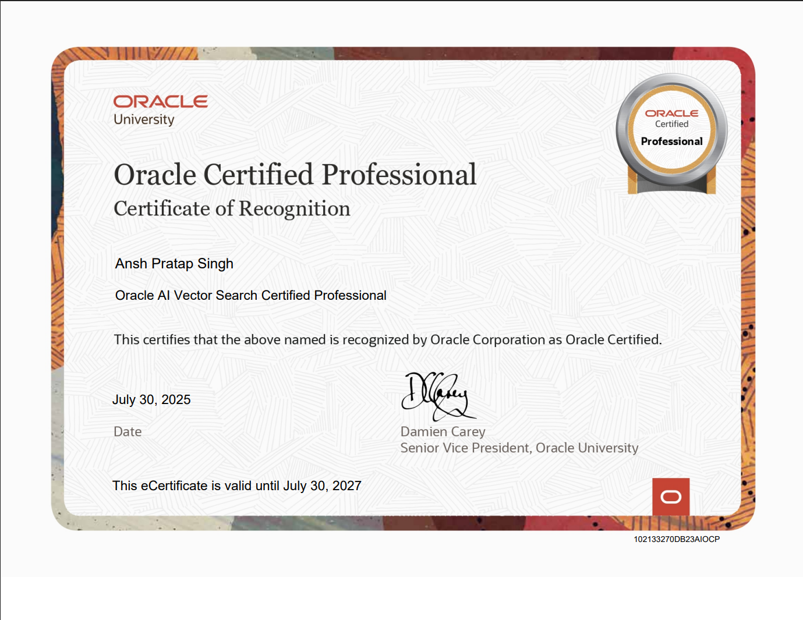

About me
I'm a Data Analyst based in Prayagraj,Uttar Pradesh, India, who turns numbers into actionable stories using Python. With libraries like Pandas, NumPy, and Matplotlib,using Excel,Power BI and Tableau, I dive deep into data to uncover insights, solve problems, and create stunning visualizations.
Explore my projects to see how I’ve cleaned, analyzed, and visualized data to drive smarter decisions in finance, healthcare, and e-commerce.
Let’s transform data into impact!
MY SKILLS
-
Dashboard designing
The most modern and high-quality,live designs made at a professional level using Power BI and Tableau.
-

Data Cleaning
I work on data cleaning to develop high-quality databases using Excel and Python libraries. .
-
Problem Solving
I keep working on bottleneck solutions to enhance my problem solving skills.
-
Buiding Chatbots
I love working one new chatbots and AI models.I have a belief that training AI models is an opportunity to satisfy our hunger of curiousity.
Projects
Certificates
-
Developer Professional
(Oracle Certification)
-
AI Vector Search
(Oracle Certification)
 -
OCI Generative AI
(Oracle Certification)
-
OCI Data Science
(Oracle Certification)
-
RS & GIS Applications in Natural Resource Management
(Indian Space Research Organization)
-
BCG - Introduction to Data for Decision Makers Job Simulation
MicroLearning (BCG)

-
BCG - GenAI Job Simulation
MicroLearning (BCG)
-
Dashboard Designing
MicroLearning (Tata)

-
LifeArc - Technology Transfer Job Simulation
MicroLearning (LifeArc)
-
A Guide to Machine Learning with Data Science
(Cipherschool)
-
SQL
Database Management (Great Learning)
-
Excel
Business Analytics with Excel (Simpilearn)
-
Agile Project Management
(HP)
-
Responsive Web Designing
(Free Code Camp)
-
Digital System
(Universitat Autonoma de Barcelona-Coursera)
_1.jpg)
-
Python Programming
for Beginners (HackerRank)

-
Java Programming
for Beginners (HackerRank)

-
Computer Organisation
Hardware and OS (IBM)

-
Computer Networks
(University of Colorado -Coursera)
-
C for
Beginners (Great Learning)
-
Energy Literacy
(Energy Swaraj Foundation)

-
Sustainablity
(Nestle)